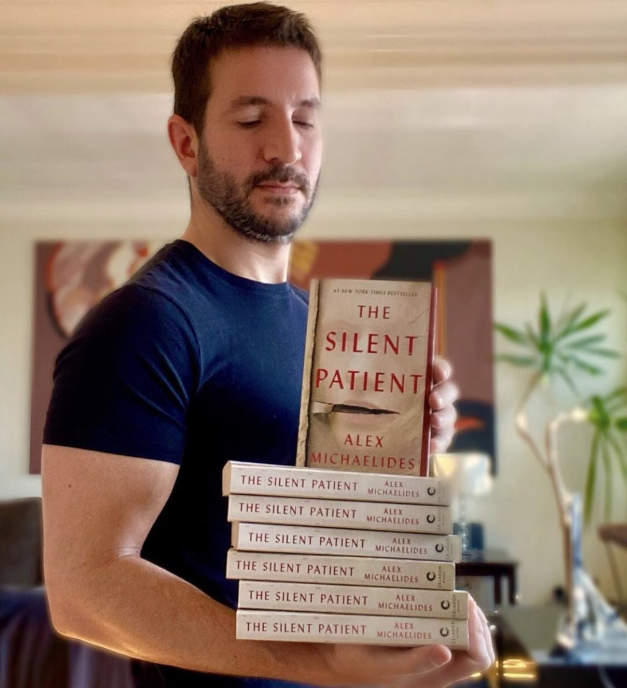

Alex Michaelides was born and raised in Cyprus. He has an M.A. in English Literature from Trinity College, Cambridge University, and an M.A. in Screenwriting from the American Film Institute in Los Angeles. The Silent Patient was his first novel, debuting at #1 on the New York Times bestseller list, and has sold more than 6.5 million copies worldwide. The rights have been sold in a record-breaking 51 countries, and the book has been optioned for film by Plan B. His second novel, The Maidens, was an instant New York Times bestseller and has been optioned for television by Miramax Television and Stone Village.
